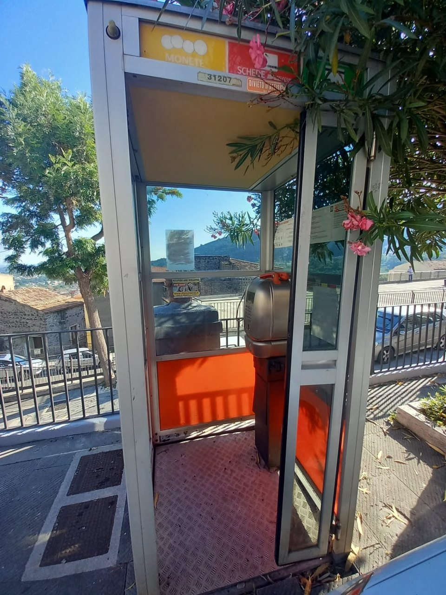
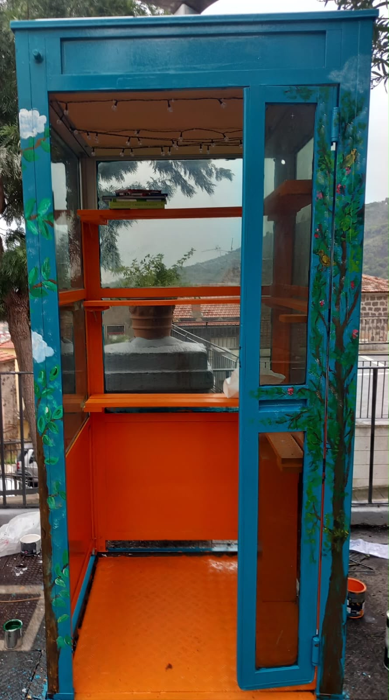

La nostra storia
Una vecchia cabina, una nuova storia da raccontare.
Siamo la “TENIAMOCI PER MANO APS” un’associazione di clownterapia che attraverso il volontariato porta sorrisi, emozioni e momenti di spensieratezza in tutta Italia.
Nel nostro distretto AURUNCO abbiamo deciso di dare vita a un progetto speciale: trasformare una vecchia cabina telefonica in una piccola libreria di strada. Quella che un tempo era un luogo dove le persone si fermavano per comunicare, oggi è diventata uno spazio dove incontrarsi attraverso le pagine di un libro. Chiunque può prendere in prestito un libro, lasciarne uno in dono o semplicemente contribuire a far circolare la magia della lettura.
Abbiamo dato nuova vita a una vecchia cabina, ma soprattutto abbiamo creato uno spazio in cui la cultura si condivide, la gentilezza si moltiplica e le storie continuano a unire le persone. Perché proprio come ci insegna il nostro nome insieme possiamo fare molto di più: tenendoci per mano, una storia alla volta.
-
La nostra missione
Promuovere la lettura, il riuso e la condivisione attraverso un piccolo gesto quotidiano.
-
La nostra comunità
Un progetto che vive grazie a chi dona, sceglie e si prende cura dei libri.